.gif)
История и модификаци ANDROID OS
Android — свободная операционная система для мобильных телефонов, планшетных компьютеров, умных часов, телевизоров и смартбуков, использующая ядро Linux, разрабатываемая Open Handset Alliance и принадлежащая Google. С момента выхода первой версии в сентябре 2008 года произошло 40 обновлений системы. Эти обновления, как правило, касаются исправления обнаруженных ошибок и добавления новой функциональности в систему.
Изначально Google рассчитывала давать версиям Android имена известных роботов, но отказалась из-за проблем с авторскими правами. Каждая версия системы, начиная с версии 1.5, получает собственное кодовое имя на тему сладостей. Кодовые имена присваиваются в алфавитном порядке латинского алфавита.
[Краткаяя история происхождения android] (спойлер)
Android Inc. основана в 2003 году, независимо от компании Google. У Энди Рубина, Рика Майнера, Ника Сирса и Криса Уайта была цель – разработать «более умные мобильные устройства, которые лучше знают о местонахождении и предпочтениях владельца». Такая грандиозная цель требовала больших ресурсов, которых у молодого стартапа было совсем не в избытке. Инвесторы неохотно соглашались на финансирование пока не принесшего результатов проекта. Доходило даже до того, что им просто смеялись в лицо, как сделала, например, компания Samsung, высмеяв презентацию разработчиков в своем офисе.И в 2005 денег вовсе не осталось. Однако в том же году Android Inc. была поглощена корпорацией Google. После на первой внутрикорпоративной презентации разработчики представили концепцию развития устройств на базе Android. Это было совсем не то, чем система является сейчас: пилотных устройств не было, был только код и ориентация на кнопочные девайсы (в основном от Blackberry). Постепенно, с наращиванием функциональности, разработчики приходят к устройствам с сенсорным экраном, но в то же время не отказываются от QWERTY-клавиатуры. Основным партнером в этой области оказалась тайваньская HTC.
23 сентября 2008 года была наконец представлена первая версия операционки — Android 1.0 Astroboy. Это была первая стабильная версия системы, с уже готовыми инструментами для разработчиков и Android Market. Первым телефоном под управлением Android стал HTC Dream. Из-за небольшой цены и «эффекта нового» телефон очень быстро разошелся в США и странах Европы, что дало хорошую мотивацию как для HTC, так и для Android.
[список версий os] (спойлер)

[OREO]-[android 8.0-8.1 • 2017 год]
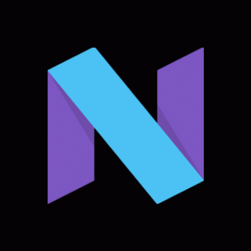
[Nougat]-[android 7.0-7.1.2 • 2016 год]
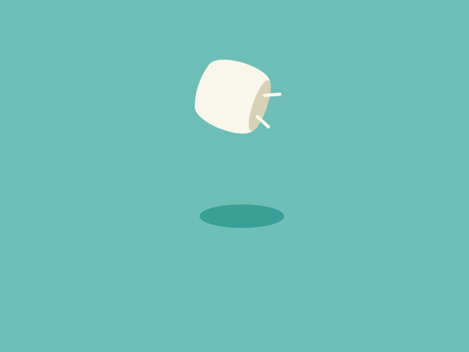
[Marshmallow]-[android 6.0-6.0.1 • 2015 год]
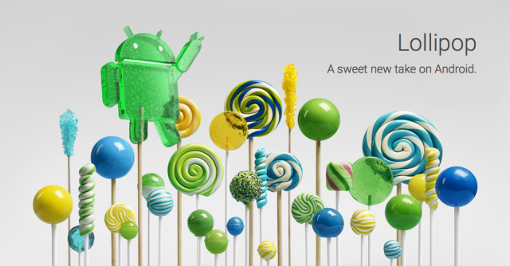
[Lollipop]-[android 5.0-5.1 • 2014 год]
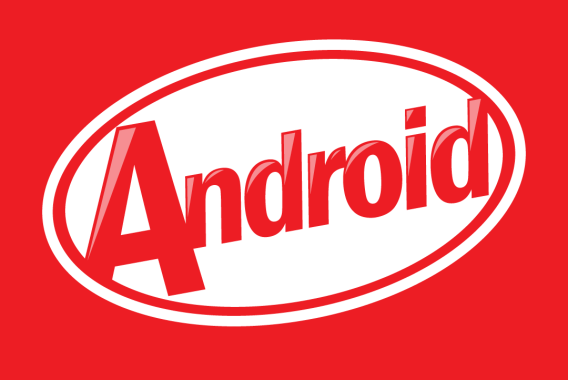
[KitKat]-[android 4.4-4.4.4 • 2013 год]
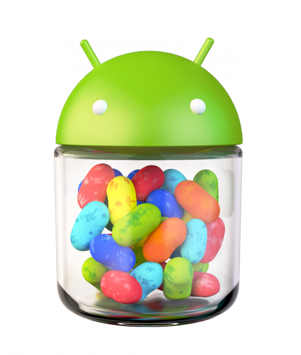
[Jelly Bean]-[android 4.1-4.3 • 2012 год]
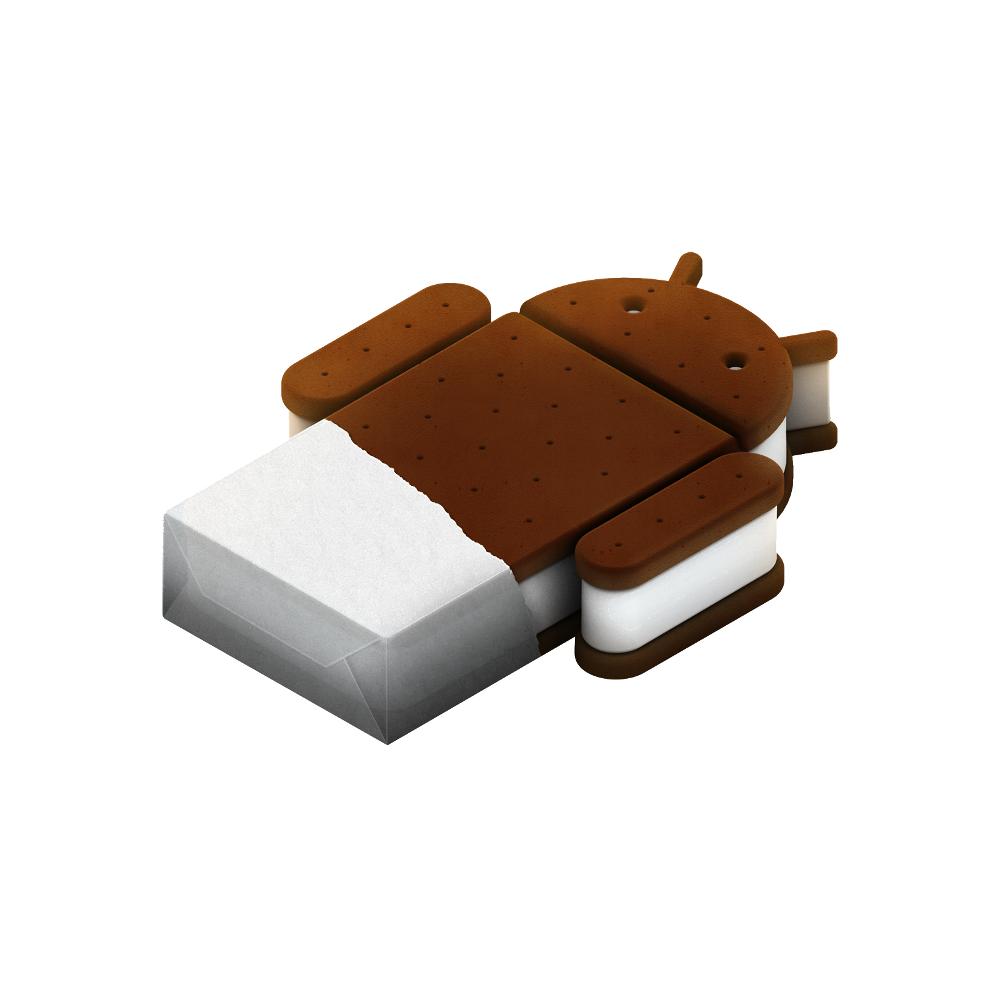
[Ice Cream Sandwich]-[android 4.0 • 2011 год]
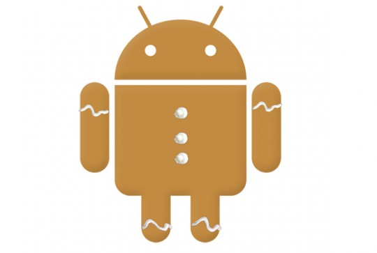
[Gingerbread]-[android 2.3 • 2010 год]
Также существуют оболочки и кастомные прошивки основанные на чистом android, которые отличаются функционалом и возможностями.
[самые популярные кастомные прошивки] (спойлер)
[Resurrection Remix][5.7.4-6.0 (Android 6.0-8.0)]
Это одна из самых настраевымых прошивок известных на данный момент.
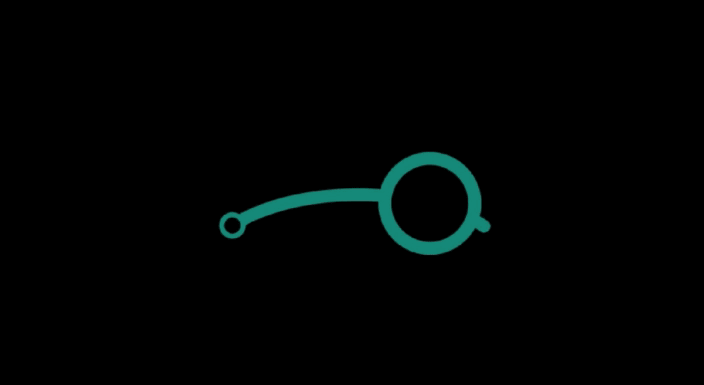
[lineage os][android 6.0-8.1]
Считаеться самой стабильной прошивкой.
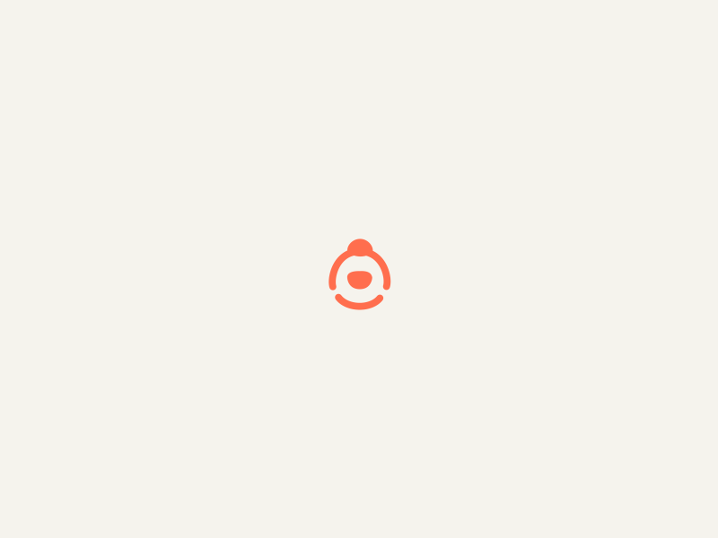
[crDroid][Android 6.0-8.1]
Середина между RR и LOS.
[самые популярные оболочки] (спойлер)
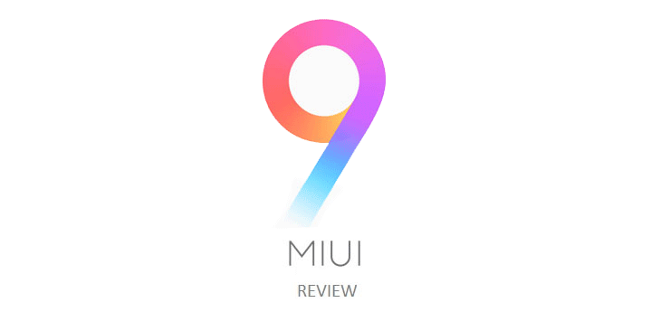
[MIUI (Xiaomi)][Android 2.3-8.1]
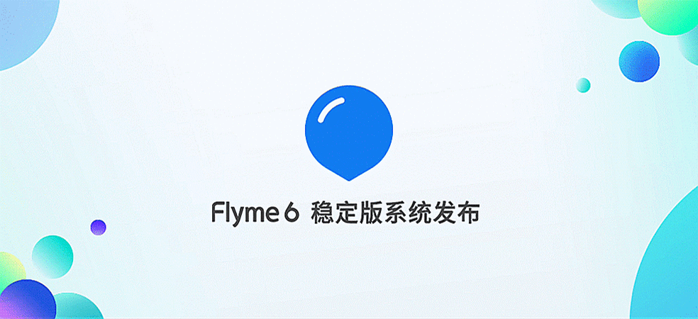
[Flyme (Meizu][android 4.0-8.1]